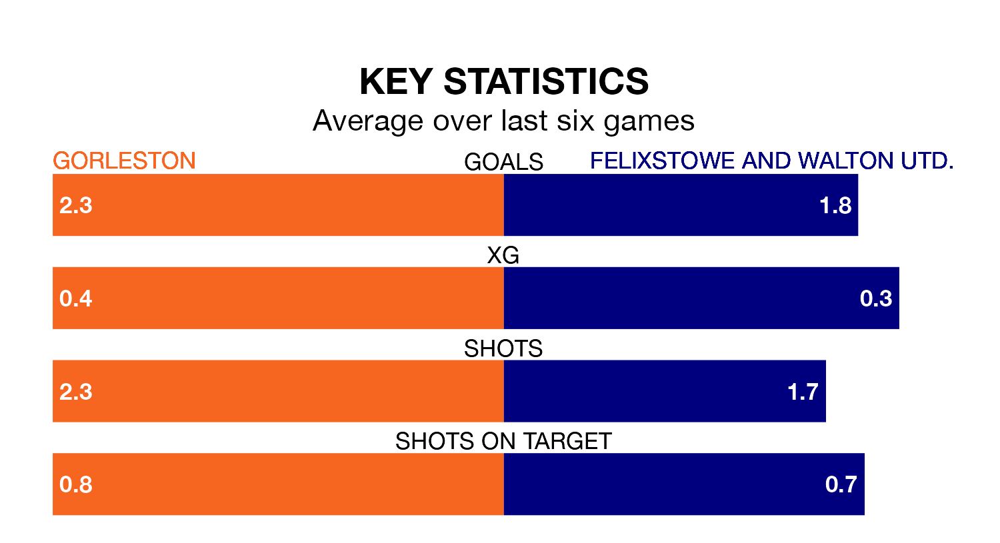

Two of the Isthmian League Division One North's meanest defences go head-to-head at Crown Meadow on Saturday, when Gorleston host Felixstowe and Walton Utd..
Only three sides – East Thurrock United, Brentwood Town and Lowestoft Town – have conceded fewer goals than Gorleston to date: the home side have let in just 28 goals in 22 games.
Felixstowe & Walton Utd. have conceded the same number of goals in 24 games, giving them the joint-fourth tightest back line so far this season.
Felixstowe & Walton Utd. are second in the table after 24 games, of which they have won 15 and drawn five, earning 50 points.
Gorleston are nine places behind the away side in 11th, with eight wins and six draws putting them on 30 points.
The hosts are in reasonable form in the Isthmian League Division One North, with three wins and two draws from their last six games.
With five wins and a draw over that period, Felixstowe & Walton Utd.'s form is better – they have taken 16 points from 18, compared to Gorleston's 11.
In the last three years, Gorleston and Felixstowe & Walton Utd. have played each other on three occasions. Felixstowe & Walton Utd. won two of them and they drew once.
Their last meeting was on December 2, when Felixstowe & Walton Utd. won 4-0 at home.
Gorleston's last match was on March 16, a 6-0 win against Stowmarket Town.
Felixstowe & Walton Utd. beat Brightlingsea Regent 2-0 last time out, on February 13.
Updated: 11:31 (UTC), 15/04/24